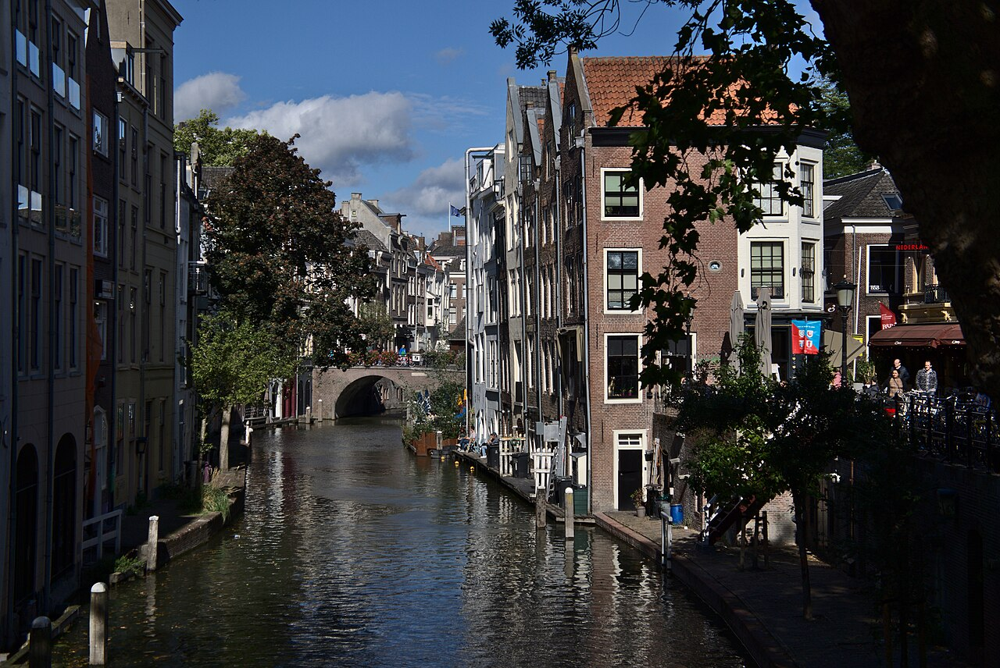
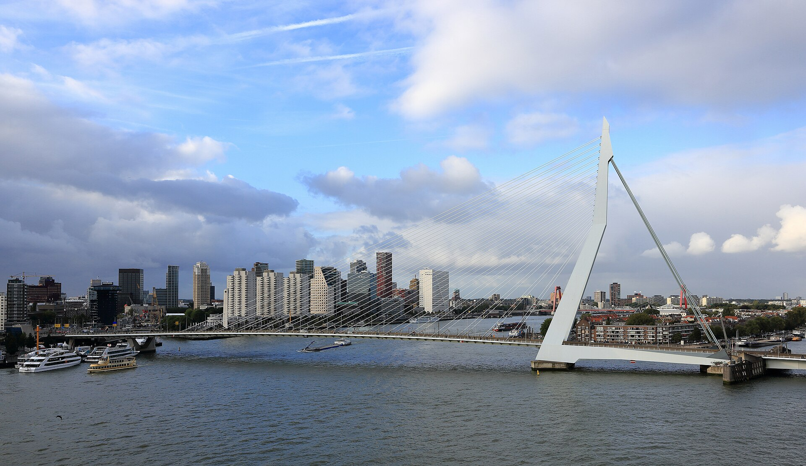
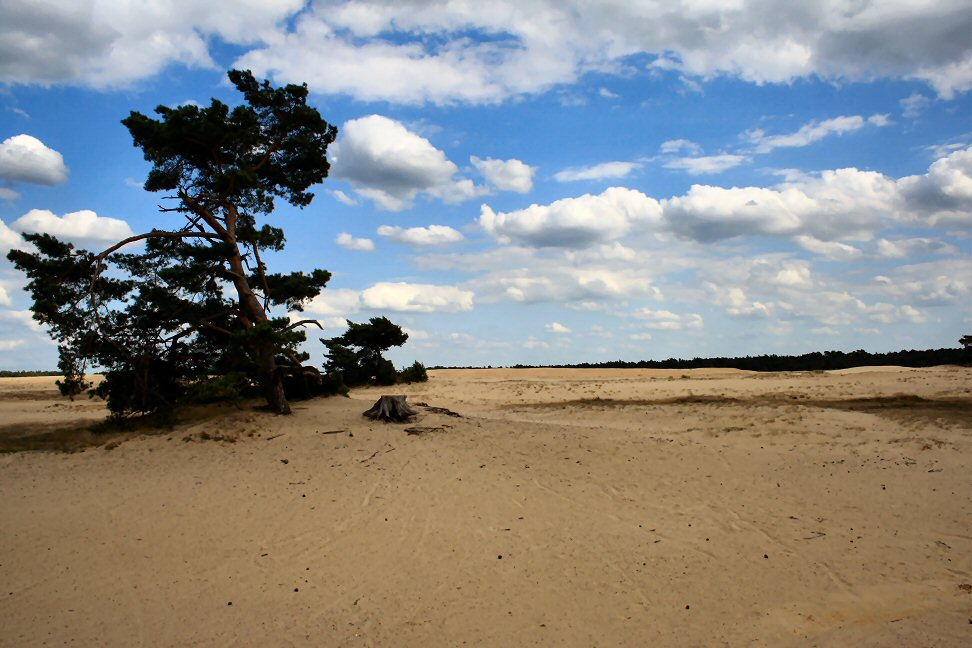
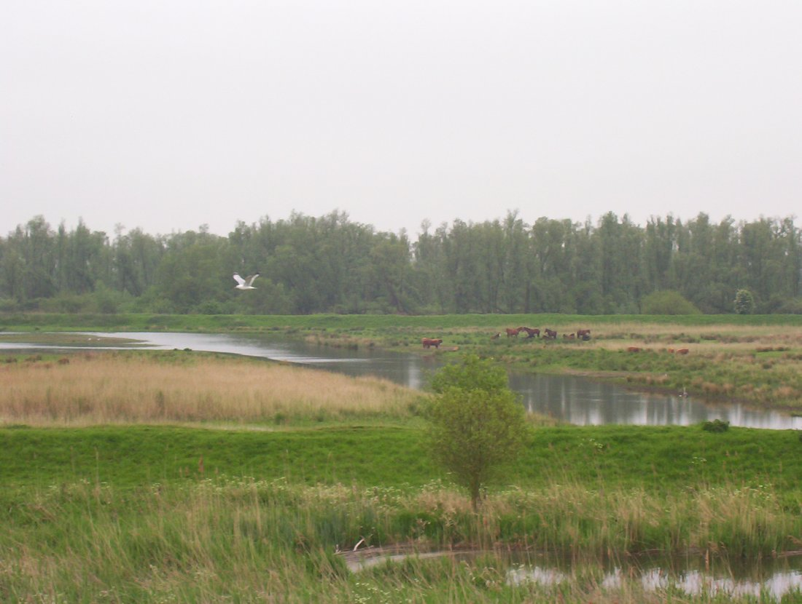
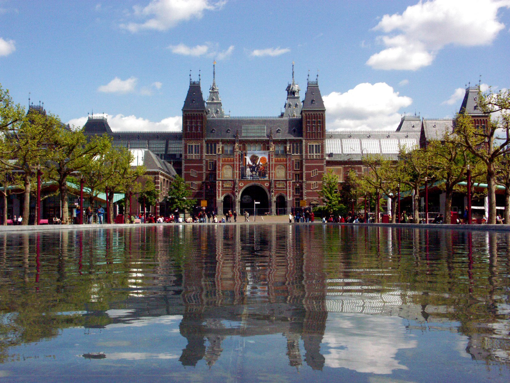
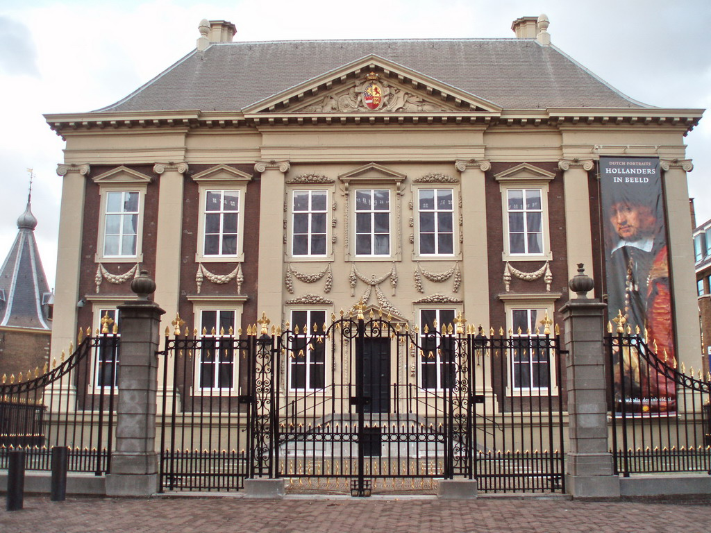

Steden
Utrecht langs de grachten
Verken de grachten en ontdek de stad te voet of op de fiets.
Meer over UtrechtSteden · Natuur · Cultuur
Wandel langs de grachten, zoek de natuur op of stap een museum binnen. Ontdek welke bestemming bij jouw dag past.
Bekijk de bestemmingenWaar wil jij naartoe?
6 bestemmingen

Steden
Verken de grachten en ontdek de stad te voet of op de fiets.
Meer over Utrecht
Steden
Ontdek het verhaal achter de opvallende brug over de Nieuwe Maas.
Meer over de Erasmusbrug
Natuur
Ontdek een afwisselend landschap met bos, heide en zandverstuivingen.
Meer over De Hoge Veluwe
Natuur
Verken het waterrijke landschap via een wandelroute of een tocht over het water.
Meer over de Biesbosch
Cultuur
Maak in Amsterdam kennis met kunst van onder anderen Rembrandt en Vermeer.
Meer over het Rijksmuseum
Cultuur
Ontdek in Den Haag schilderijen zoals Vermeers Meisje met de parel.
Meer over het MauritshuisProbeer een andere zoekterm of bekijk alle categorieën.
Bekijk op de officiële website de actuele openingstijden en eventuele reserveringen.
Kies je vervoer en controleer hoe je bij je bestemming komt.
Zoek vooraf de informatie over toegankelijkheid en voorzieningen die voor jou belangrijk zijn.
Ontdek Nederland is een portfolio-project van Armine Vardanyan. De pagina verzamelt inspiratie voor een dagje uit. De links bij de bestemmingen leiden naar officiële websites met meer informatie.